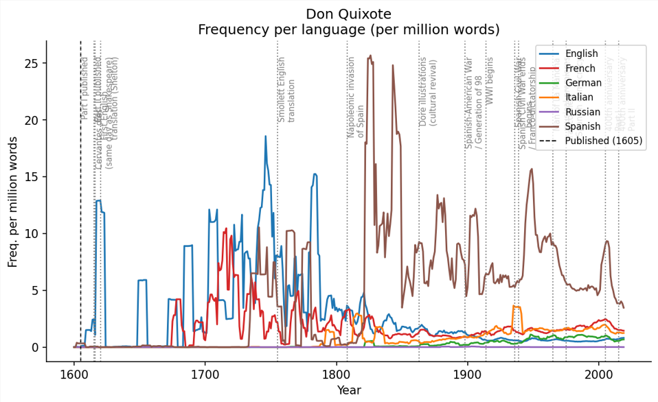
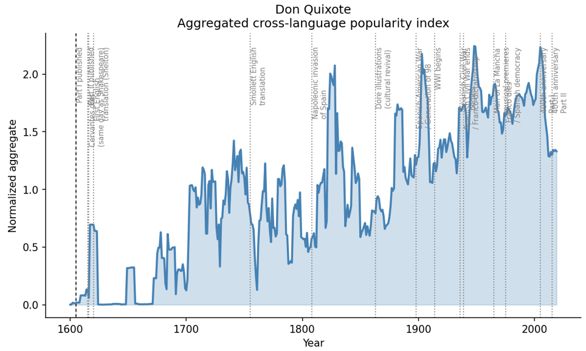
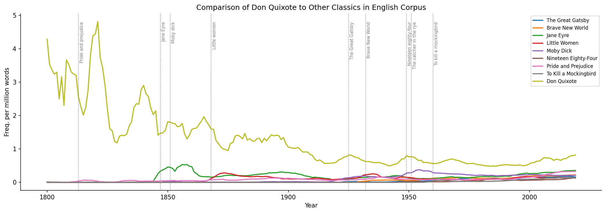

Don Quixote
It is undeniable that Don Quixote has had an incredible impact on Spanish literature and the literature of the broader Western world. William Faulkner, a 20th century American author and Nobel Laureate, reportedly read the near 1000-page novel every year.

Reading the Data
The seeming volatility in the popularity of Don Quixote before the year 1750 can be attributed to the unreliability of records and metadata in the Ngram dataset for earlier years. Don Quixote, as expected, appears much more often in the Spanish dataset than in other languages. It also seems to be very relevant in the English corpus, although its popularity in this language’s literary scene seems to have been in a steady decline for the last 300 years.

Peaks & Their Historical Causes
In general, Don Quixote shows a steady growth in popularity throughout the years, reaching sharp highs in ~1825, ~1905, ~1945, and ~2000. These dates are important.
The early 1800s were marked by the rise of romantic literature, which completely changed how the novel was interpreted and read. The German Romantics saw it as a sentimental and philosophical exploration of man, a sharp contrast to the previous idea of the novel as a simple satire of chivalric romances. The Schlegel Brothers even called it “the Greatest Romantic Novel.”
The early 1800s were also marked by turmoil in Europe because of the Napoleonic wars, where Spain was invaded by Napoleon's France and began losing its vast colonies in the west to independence movements.
La Generación Del 98
Similarly, Spain began the 1900s with a catastrophic defeat in the Spanish-American War of 1898. This defeat sparked the Spanish literary movement called La Generación Del 98. The name was coined by José Martínez Ruiz (or "Azorín"), referring to a school of thought that explored the political and social crisis triggered by Spain's defeat.
These writers and poets adopted Don Quixote and used it as a proxy through which they could analyze, explore, and critique Spanish culture and society
Franco, Civil War & the 400th Anniversary
The mid 20th century was marked in Spain by its infamous civil war, and ensuing dictatorship under the hand of Francisco Franco. This was an incredibly painful period for Spanish people, as cities, towns and families were torn apart by the consequences of this bloody civil war. After the fall of the republic, Franco appropriated Don Quixote as fuel for his unique and stringent brand of far right nationalism. The year 2005 marked a milestone for this historic novel, being its 400th anniversary.
The year 2005 marked a milestone for this historic novel — its 400th anniversary — corresponding to the sharpest single-year spike visible in the Ngram data around the year 2000.

Conclusion
As we can see, Don Quixote remains to this day as relevant as it has always been, still being more mentioned in English literary discourse today, over 400 years after its publication, than modern classics such as The Great Gatsby, or Pride and Prejudice.